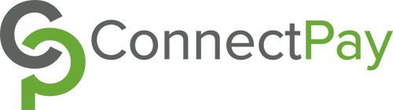

Hello, I'm Cassie! I am from Easton, MA. I received my Bachelor of Arts degree in Computer Science with a Biology minor in May 2025
at Skidmore College while also being a key player on the women's basketball team for four years. My interest of programming began during high school, and my passion for it was strong enough to
lead me to further exploration in college. Beyond academics I enjoy running, fishing, pretty sunsets, and training and walking dogs.
Algorithms, Computability & Complexity, Computer Organization, Databases, Data Structures, Mobile Computing, Programming Languages, Software Design, Software Engineering
Other Courses
Biostatistics, Calculus I, Endocrinology, Evolution, Linear Algebra, Principals of Chemistry, Sexual Selection
Development Intern, ConnectPay Payroll Services
Languages: Java
Summer 2024
(June-August 2024)
• Enhanced Selenium WebDriver skills through hands-on development and execution of QA test cases.
• Developed and executed automated test cases using Selenium WebDriver within a DevOps pipeline.
• Ensured functionality and integrity of an updated web application.

Computer Science Peer Academic Coach Captain, Skidmore College, Brenda Pashley
Languages:Python, Java
Fall 2022-Spring 2025
(September 2022 - May 2025)
• Lead and organize meetings with the rest of the Computer Science PACs
• Participated in training classes to improve tutoring practices and learn new tutoring techniques
• Worked with variety of level of students to increase their understanding with computer science concepts
• Administered feedback to students using positive reinforcement techniques to encourage and build confidence
10 Week Summer Research, Skidmore College, Dr Aarathi Prasad
Languages: React Native, HTML, JavaScript
Summer 2023
(May-August 2023)
• Completed 10 week long collaborative research to learn about children’s understanding of their safety online
• First 5 weeks spent researching about children's understanding of online safety and laws put in place to help them
stay safe
• Last 5 weeks spent brainstorming app ideas, learning React Native, and building and designing the app
• Acquired and applied advanced skills in React Native, HTML, and JavaScript to design and develop a social media application
aimed at fostering safe online interactions and educating children about privacy.
• Delivered a poster presentation at the Skidmore summer faculty-student research symposium, showcasing a demo of the app and
contributed to discussions on enhancing digital safety for children.
Computer Science Teaching Assistant, Skidmore College, Nelson Dellis
Language: python
Fall 2022-Spring 2023
(September-December 2023 & January-May 2023)
• Facilitated collaborative learning for 25 peers in weekly 3-hour lab sessions in an Intro to Computer Science class.
• Provided hands-on assistance and guidance in Python.
• Demonstrated strong communication skills and promoted an engaging atmosphere where students felt comfortable seeking assistance.
Semester Research, Skidmore College, Dr Aarathi Prasad
Language: LaTeX
Fall 2022
(September-December 2022)
• Completed semester-long research to develop an understanding of opinions regarding genetic testing
and pros and cons associated with the ability to manipulate the human genome.
• Read academic articles and conducted a literature review based on findings.
Computer Science Research Assistant, Skidmore College, Dr Aarathi Prasad
Languages: Python, Swift
Spring 2022
(March-May 2022)
• Assisted in a semester-long research project focused on managing problematic smartphone use and presented
findings at the Skidmore Academic Festival 2022.
• Conducted a pilot user study using Qualtrics to evaluate effectiveness of our
methods and summarized results using Python to generate graphs from CSV files.
• Presented a poster presentation based on five participants testing the usage and efficiency of an iPhone app
Skidmore Women's Basketball, Skidmore College, David Bostick
(September 2021 - February 2025)
• Committed 30 hours a week of training, practicing, watching film, and traveling to games while maintaining a full course load.
• Developed leadership skills and a strong work ethic to meet personal and team goals.
• Improved time-management skills and commuication
• Played a vital role in helping lead the team to win the Liberty League Championship 2023.
• Designed and conducted daily basketball drills and practice sessions, focusing on skill development,
teamwork, and sportsmanship for groups of 20+ campers aged 8-14.
• Provided guidance and support to young athletes, fostering a positive and inclusive environment.
• Provided constructive feedback to campers and communicated progress reports to parents, ensuring continuous improvement and goal achievement.
Camp Counsellor, Thayer Academy, Cathy Turpel
(May 2022 - August 2022)
• Successfully managed various camper groups, adapting quickly to different ages, needs, and personalities while
maintaining a positive and supportive atmosphere.
• Proactively addressed individual camper concerns and emergencies, ensuring a secure and nurturing environment for all participants.
Honors & Awards
Magna Cum Laude
Skidmore College, May 2025
Graduated with high honors, awarded to students who achieve a cumulative GPA of 3.75 to 3.89,
demonstrating consistent academic excellence throughout their undergraduate career.
Dean's List
Skidmore College, Fall 2021, Fall 2022, Spring 2023, Fall 2023, Spring 2024
Given to students who satisfactorily complete at least 14 semester hours of credit and
who achieves a 3.650 GPA for that semester
Academic All District Basketball Team
NCAA D3 Women's Basketball, February 2023, 2024, 2025
Awarded to the nation’s top student-athletes for combined performance on the court and in
the classroom
Thoroughbred Society
Skidmore College Athletics, Fall 2021, Fall 2022, Spring 2023, Fall 2023, Spring 2024
The Thoroughbred Society recognizes Skidmore College varsity student-athletes who have
achieved a grade point average of 3.67 or higher the previous semester.
Schupf Scholar Program
Skidmore College, May 2023
Awarded to female students in science fields where they are underrepresented and who will
complete 10 weeks of summer research
Maureen E. Bucken Girls’ Athletic Award
Thayer Academy, May 2021
Given to female athletes who demonstrate selflessness, friendliness, and good sportsmanship